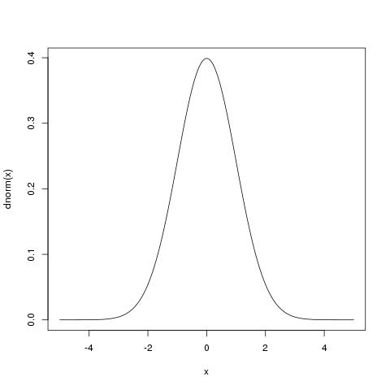
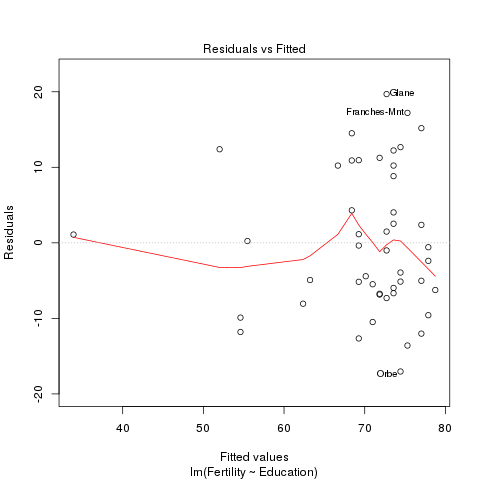

Estadística básica con R
Índice
- 1. Conjunto de datos
- 2. Estadística Univariante
- 3. Generar datos aleatorios
- 4. Tests de Hipótesis
- 5. Regresión lineal
- 5.1. Fertilidad y educación
- 5.2. Fertilidad y educación
- 5.3. Fertilidad y educación
- 5.4. Fertilidad y educación
- 5.5. Fertilidad, educación y religión
- 5.6. Lo mismo con
update - 5.7. Fertilidad, educación, religión y agricultura
- 5.8. Lo mismo con
update - 5.9. Lo mismo con
update - 5.10. Comparamos modelos con
anova - 5.11. Fertilidad contra todo
- 5.12. Elegir un modelo con
anova - 5.13. Elegir un modelo con
step - 5.14. Elegir un modelo
- 5.15. Elegir un modelo
1 Conjunto de datos
1.1 Conjunto de datos: swiss
Standardized fertility measure and socio-economic indicators for each of 47 French-speaking provinces of Switzerland at about 1888. 6 variables in percent [0, 100]:
- Fertility: Ig, ‘common standardized fertility measure’
- Agriculture: % of males involved in agriculture as occupation
- Examination: % draftees receiving highest mark on army examination
- Education: % education beyond primary school for draftees.
- Catholic: % ‘catholic’ (as opposed to ‘protestant’).
- Infant.Mortality: live births who live less than 1year.
1.2 Conjunto de datos: swiss
data(swiss) summary(swiss)
Fertility Agriculture Examination Education
Min. :35.00 Min. : 1.20 Min. : 3.00 Min. : 1.00
1st Qu.:64.70 1st Qu.:35.90 1st Qu.:12.00 1st Qu.: 6.00
Median :70.40 Median :54.10 Median :16.00 Median : 8.00
Mean :70.14 Mean :50.66 Mean :16.49 Mean :10.98
3rd Qu.:78.45 3rd Qu.:67.65 3rd Qu.:22.00 3rd Qu.:12.00
Max. :92.50 Max. :89.70 Max. :37.00 Max. :53.00
Catholic Infant.Mortality
Min. : 2.150 Min. :10.80
1st Qu.: 5.195 1st Qu.:18.15
Median : 15.140 Median :20.00
Mean : 41.144 Mean :19.94
3rd Qu.: 93.125 3rd Qu.:21.70
Max. :100.000 Max. :26.60
1.3
library(lattice) splom(swiss, pscale=0, type=c('p', 'smooth'), groups=swiss$Catholic > 50, xlab='')

2 Estadística Univariante
2.1 Resumen de información
summary(swiss)
Fertility Agriculture Examination Education
Min. :35.00 Min. : 1.20 Min. : 3.00 Min. : 1.00
1st Qu.:64.70 1st Qu.:35.90 1st Qu.:12.00 1st Qu.: 6.00
Median :70.40 Median :54.10 Median :16.00 Median : 8.00
Mean :70.14 Mean :50.66 Mean :16.49 Mean :10.98
3rd Qu.:78.45 3rd Qu.:67.65 3rd Qu.:22.00 3rd Qu.:12.00
Max. :92.50 Max. :89.70 Max. :37.00 Max. :53.00
Catholic Infant.Mortality
Min. : 2.150 Min. :10.80
1st Qu.: 5.195 1st Qu.:18.15
Median : 15.140 Median :20.00
Mean : 41.144 Mean :19.94
3rd Qu.: 93.125 3rd Qu.:21.70
Max. :100.000 Max. :26.60
2.2 Media
mean(swiss$Fertility)
[1] 70.14255
colMeans(swiss)
Fertility Agriculture Examination Education 70.14255 50.65957 16.48936 10.97872 Catholic Infant.Mortality 41.14383 19.94255
2.3 Desviación Estándar
sd(swiss$Fertility)
[1] 12.4917
sapply(swiss, sd)
Fertility Agriculture Examination Education 12.491697 22.711218 7.977883 9.615407 Catholic Infant.Mortality 41.704850 2.912697
2.4 Otras
median(swiss$Fertility)
[1] 70.4
mad(swiss$Fertility)
[1] 10.22994
IQR(swiss$Fertility)
[1] 13.75
3 Generar datos aleatorios
3.1 Distribuciones disponibles
- BMCOL
- beta
beta - binomial
binom - Cauchy
cauchy - chi-squared
chisq - exponential
exp - F
f - gamma
gamma - geometric
geom - hypergeometric
hyper
- beta
- BMCOL
- log-normal
lnorm - logistic
logis - negative
binomial - normal
norm - Poisson
pois - signed rank
signrank - Student’s t
t - uniform
unif - Weibull
weibull - Wilcoxon
wilcox
- log-normal
3.2 Densidad, CDF, Cuantiles, y Números aleatorios
-
dxxx - función de densidad de probabilidad
-
pxxx - función acumulada de probabilidad
-
qxxx - cuantiles
-
rxxx - generación de números aleatorios
3.3 Distribución Normal
rnorm(10, mean = 1, sd = .4)
[1] 0.5987165 0.7374486 1.0635955 0.2232172 1.0509421 0.9659542 0.5948662 [8] 0.8766249 1.0982419 0.9985146
hist(rnorm(1e6, mean = 1, sd = .4))

3.4 Distribución Normal
x <- seq( -5, 5, by =.01) plot(x, dnorm(x), type = 'l')

3.5 Distribución Uniforme
runif(10, min=-3, max=3)
[1] 1.2153711 -2.8451359 0.8235075 -1.0147079 -1.7177479 -1.3571362 [7] 2.7228768 0.2771958 0.7458442 -1.8732231
hist(runif(1e6, min = -3, max = 3))

3.6 Distribución de Weibull
rweibull(n=10, shape = 3, scale = 2)
[1] 0.7661914 1.3502844 0.9237997 1.8538150 1.8644202 2.5229566 1.6498369 [8] 1.8534614 1.9982788 2.7837383
hist(rweibull(1e6, shape = 3, scale = 2))

3.7 Muestreo aleatorio
x <- seq(1, 100, length = 10)
x
[1] 1 12 23 34 45 56 67 78 89 100
- Sin reemplazo
sample(x)
[1] 12 23 45 78 1 100 34 89 67 56
sample(x, 5)
[1] 89 100 56 23 12
- Con reemplazo
sample(x, 5, replace = TRUE)
[1] 1 56 89 45 89
4 Tests de Hipótesis
4.1 Para muestra única
- t de Student
t.test(swiss$Fertility, mu=70)
One Sample t-test data: swiss$Fertility t = 0.078236, df = 46, p-value = 0.938 alternative hypothesis: true mean is not equal to 70 95 percent confidence interval: 66.47485 73.81025 sample estimates: mean of x 70.14255
- Wilcoxon (no paramétrico)
wilcox.test(swiss$Fertility, mu=70)
Wilcoxon signed rank test with continuity correction data: swiss$Fertility V = 592.5, p-value = 0.767 alternative hypothesis: true location is not equal to 70 Warning message: In wilcox.test.default(swiss$Fertility, mu = 70) : cannot compute exact p-value with ties
4.2 Para muestras pareadas
Religion <- ifelse(swiss$Catholic > 50, 'Catholic', 'Protestant')
- t de Student
t.test(Fertility ~ Religion, data=swiss)
Welch Two Sample t-test
data: Fertility by Religion
t = 2.7004, df = 26.742, p-value = 0.01186
alternative hypothesis: true difference in means is not equal to 0
95 percent confidence interval:
2.455904 18.024939
sample estimates:
mean in group Catholic mean in group Protestant
76.46111 66.22069
4.3 Para muestras pareadas
- Wilcoxon
wilcox.test(Fertility ~ Religion, data=swiss)
Wilcoxon rank sum test with continuity correction data: Fertility by Religion W = 409.5, p-value = 0.0012 alternative hypothesis: true location shift is not equal to 0 Warning message: In wilcox.test.default(x = c(83.1, 92.5, 76.1, 83.8, 92.4, 82.4, : cannot compute exact p-value with ties
5 Regresión lineal
5.1 Fertilidad y educación
lmFertEdu <- lm(Fertility ~ Education,
data = swiss)
summary(lmFertEdu)
Call:
lm(formula = Fertility ~ Education, data = swiss)
Residuals:
Min 1Q Median 3Q Max
-17.036 -6.711 -1.011 9.526 19.689
Coefficients:
Estimate Std. Error t value Pr(>|t|)
(Intercept) 79.6101 2.1041 37.836 < 2e-16 ***
Education -0.8624 0.1448 -5.954 3.66e-07 ***
---
Signif. codes: 0 ‘***’ 0.001 ‘**’ 0.01 ‘*’ 0.05 ‘.’ 0.1 ‘ ’ 1
Residual standard error: 9.446 on 45 degrees of freedom
Multiple R-squared: 0.4406, Adjusted R-squared: 0.4282
F-statistic: 35.45 on 1 and 45 DF, p-value: 3.659e-07
5.2 Fertilidad y educación
coef(lmFertEdu)
(Intercept) Education 79.6100585 -0.8623503
fitted.values(lmFertEdu)
Courtelary Delemont Franches-Mnt Moutier Neuveville Porrentruy
69.26186 71.84891 75.29831 73.57361 66.67480 73.57361
Broye Glane Gruyere Sarine Veveyse Aigle
73.57361 72.71126 73.57361 68.39950 74.43596 69.26186
Aubonne Avenches Cossonay Echallens Grandson Lausanne
73.57361 69.26186 75.29831 77.88536 72.71126 55.46425
La Vallee Lavaux Morges Moudon Nyone Orbe
62.36305 71.84891 70.98656 77.02301 69.26186 74.43596
Oron Payerne Paysd'enhaut Rolle Vevey Yverdon
78.74771 72.71126 77.02301 70.98656 63.22540 72.71126
Conthey Entremont Herens Martigwy Monthey St Maurice
77.88536 74.43596 77.88536 74.43596 77.02301 71.84891
Sierre Sion Boudry La Chauxdfnd Le Locle Neuchatel
77.02301 68.39950 69.26186 70.12421 68.39950 52.01485
Val de Ruz ValdeTravers V. De Geneve Rive Droite Rive Gauche
73.57361 73.57361 33.90549 54.60190 54.60190
5.3 Fertilidad y educación
residuals(lmFertEdu)
Courtelary Delemont Franches-Mnt Moutier Neuveville Porrentruy
10.9381450 11.2510941 17.2016929 12.2263935 10.2251959 2.5263935
Broye Glane Gruyere Sarine Veveyse Aigle
10.2263935 19.6887438 8.8263935 14.5004953 12.6640432 -5.1618550
Aubonne Avenches Cossonay Echallens Grandson Lausanne
-6.6736065 -0.3618550 -13.5983071 -9.5853579 -1.0112562 0.2357497
La Vallee Lavaux Morges Moudon Nyone Orbe
-8.0630527 -6.7489059 -5.4865556 -12.0230077 -12.6618550 -17.0359568
Oron Payerne Paysd'enhaut Rolle Vevey Yverdon
-6.2477082 1.4887438 -5.0230077 -10.4865556 -4.9254030 -7.3112562
Conthey Entremont Herens Martigwy Monthey St Maurice
-2.3853579 -5.1359568 -0.5853579 -3.9359568 2.3769923 -6.8489059
Sierre Sion Boudry La Chauxdfnd Le Locle Neuchatel
15.1769923 10.9004953 1.1381450 -4.4242053 4.3004953 12.3851508
Val de Ruz ValdeTravers V. De Geneve Rive Droite Rive Gauche
4.0263935 -5.9736065 1.0945070 -9.9019000 -11.8019000
5.4 Fertilidad y educación
plot(lmFertEdu, which = 1)

5.5 Fertilidad, educación y religión
lmFertEduCat <- lm(Fertility ~ Education + Catholic,
data = swiss)
summary(lmFertEduCat)
Call:
lm(formula = Fertility ~ Education + Catholic, data = swiss)
Residuals:
Min 1Q Median 3Q Max
-15.042 -6.578 -1.431 6.122 14.322
Coefficients:
Estimate Std. Error t value Pr(>|t|)
(Intercept) 74.23369 2.35197 31.562 < 2e-16 ***
Education -0.78833 0.12929 -6.097 2.43e-07 ***
Catholic 0.11092 0.02981 3.721 0.00056 ***
---
Signif. codes: 0 ‘***’ 0.001 ‘**’ 0.01 ‘*’ 0.05 ‘.’ 0.1 ‘ ’ 1
Residual standard error: 8.331 on 44 degrees of freedom
Multiple R-squared: 0.5745, Adjusted R-squared: 0.5552
F-statistic: 29.7 on 2 and 44 DF, p-value: 6.849e-09
5.6 Lo mismo con update
lmFertEduCat <- update(lmFertEdu, . ~ . + Catholic,
data = swiss)
summary(lmFertEduCat)
Call:
lm(formula = Fertility ~ Education + Catholic, data = swiss)
Residuals:
Min 1Q Median 3Q Max
-15.042 -6.578 -1.431 6.122 14.322
Coefficients:
Estimate Std. Error t value Pr(>|t|)
(Intercept) 74.23369 2.35197 31.562 < 2e-16 ***
Education -0.78833 0.12929 -6.097 2.43e-07 ***
Catholic 0.11092 0.02981 3.721 0.00056 ***
---
Signif. codes: 0 ‘***’ 0.001 ‘**’ 0.01 ‘*’ 0.05 ‘.’ 0.1 ‘ ’ 1
Residual standard error: 8.331 on 44 degrees of freedom
Multiple R-squared: 0.5745, Adjusted R-squared: 0.5552
F-statistic: 29.7 on 2 and 44 DF, p-value: 6.849e-09
5.7 Fertilidad, educación, religión y agricultura
lmFertEduCatAgr <- lm(Fertility ~ Education + Catholic + Agriculture,
data = swiss)
summary(lmFertEduCatAgr)
Call:
lm(formula = Fertility ~ Education + Catholic + Agriculture,
data = swiss)
Residuals:
Min 1Q Median 3Q Max
-15.178 -6.548 1.379 5.822 14.840
Coefficients:
Estimate Std. Error t value Pr(>|t|)
(Intercept) 86.22502 4.73472 18.211 < 2e-16 ***
Education -1.07215 0.15580 -6.881 1.91e-08 ***
Catholic 0.14520 0.03015 4.817 1.84e-05 ***
Agriculture -0.20304 0.07115 -2.854 0.00662 **
---
Signif. codes: 0 ‘***’ 0.001 ‘**’ 0.01 ‘*’ 0.05 ‘.’ 0.1 ‘ ’ 1
Residual standard error: 7.728 on 43 degrees of freedom
Multiple R-squared: 0.6423, Adjusted R-squared: 0.6173
F-statistic: 25.73 on 3 and 43 DF, p-value: 1.089e-09
5.8 Lo mismo con update
lmFertEduCatAgr <- update(lmFertEduCat,
. ~ . + Agriculture,
data = swiss)
summary(lmFertEduCatAgr)
Call:
lm(formula = Fertility ~ Education + Catholic + Agriculture,
data = swiss)
Residuals:
Min 1Q Median 3Q Max
-15.178 -6.548 1.379 5.822 14.840
Coefficients:
Estimate Std. Error t value Pr(>|t|)
(Intercept) 86.22502 4.73472 18.211 < 2e-16 ***
Education -1.07215 0.15580 -6.881 1.91e-08 ***
Catholic 0.14520 0.03015 4.817 1.84e-05 ***
Agriculture -0.20304 0.07115 -2.854 0.00662 **
---
Signif. codes: 0 ‘***’ 0.001 ‘**’ 0.01 ‘*’ 0.05 ‘.’ 0.1 ‘ ’ 1
Residual standard error: 7.728 on 43 degrees of freedom
Multiple R-squared: 0.6423, Adjusted R-squared: 0.6173
F-statistic: 25.73 on 3 and 43 DF, p-value: 1.089e-09
5.9 Lo mismo con update
lmFertEduCatAgr <- update(lmFertEdu,
. ~ . + Catholic + Agriculture,
data = swiss)
summary(lmFertEduCatAgr)
Call:
lm(formula = Fertility ~ Education + Catholic + Agriculture,
data = swiss)
Residuals:
Min 1Q Median 3Q Max
-15.178 -6.548 1.379 5.822 14.840
Coefficients:
Estimate Std. Error t value Pr(>|t|)
(Intercept) 86.22502 4.73472 18.211 < 2e-16 ***
Education -1.07215 0.15580 -6.881 1.91e-08 ***
Catholic 0.14520 0.03015 4.817 1.84e-05 ***
Agriculture -0.20304 0.07115 -2.854 0.00662 **
---
Signif. codes: 0 ‘***’ 0.001 ‘**’ 0.01 ‘*’ 0.05 ‘.’ 0.1 ‘ ’ 1
Residual standard error: 7.728 on 43 degrees of freedom
Multiple R-squared: 0.6423, Adjusted R-squared: 0.6173
F-statistic: 25.73 on 3 and 43 DF, p-value: 1.089e-09
5.10 Comparamos modelos con anova
anova(lmFertEdu, lmFertEduCat, lmFertEduCatAgr)
Analysis of Variance Table Model 1: Fertility ~ Education Model 2: Fertility ~ Education + Catholic Model 3: Fertility ~ Education + Catholic + Agriculture Res.Df RSS Df Sum of Sq F Pr(>F) 1 45 4015.2 2 44 3054.2 1 961.07 16.093 0.0002365 *** 3 43 2567.9 1 486.28 8.143 0.0066235 ** --- Signif. codes: 0 ‘***’ 0.001 ‘**’ 0.01 ‘*’ 0.05 ‘.’ 0.1 ‘ ’ 1
5.11 Fertilidad contra todo
lmFert <- lm(Fertility ~ ., data=swiss)
summary(lmFert)
Call:
lm(formula = Fertility ~ ., data = swiss)
Residuals:
Min 1Q Median 3Q Max
-15.2743 -5.2617 0.5032 4.1198 15.3213
Coefficients:
Estimate Std. Error t value Pr(>|t|)
(Intercept) 66.91518 10.70604 6.250 1.91e-07 ***
Agriculture -0.17211 0.07030 -2.448 0.01873 *
Examination -0.25801 0.25388 -1.016 0.31546
Education -0.87094 0.18303 -4.758 2.43e-05 ***
Catholic 0.10412 0.03526 2.953 0.00519 **
Infant.Mortality 1.07705 0.38172 2.822 0.00734 **
---
Signif. codes: 0 ‘***’ 0.001 ‘**’ 0.01 ‘*’ 0.05 ‘.’ 0.1 ‘ ’ 1
Residual standard error: 7.165 on 41 degrees of freedom
Multiple R-squared: 0.7067, Adjusted R-squared: 0.671
F-statistic: 19.76 on 5 and 41 DF, p-value: 5.594e-10
5.12 Elegir un modelo con anova
anova(lmFert)
Analysis of Variance Table
Response: Fertility
Df Sum Sq Mean Sq F value Pr(>F)
Agriculture 1 894.84 894.84 17.4288 0.0001515 ***
Examination 1 2210.38 2210.38 43.0516 6.885e-08 ***
Education 1 891.81 891.81 17.3699 0.0001549 ***
Catholic 1 667.13 667.13 12.9937 0.0008387 ***
Infant.Mortality 1 408.75 408.75 7.9612 0.0073357 **
Residuals 41 2105.04 51.34
---
Signif. codes: 0 ‘***’ 0.001 ‘**’ 0.01 ‘*’ 0.05 ‘.’ 0.1 ‘ ’ 1
5.13 Elegir un modelo con step
stepFert <- step(lmFert)
Start: AIC=190.69
Fertility ~ Agriculture + Examination + Education + Catholic +
Infant.Mortality
Df Sum of Sq RSS AIC
- Examination 1 53.03 2158.1 189.86
<none> 2105.0 190.69
- Agriculture 1 307.72 2412.8 195.10
- Infant.Mortality 1 408.75 2513.8 197.03
- Catholic 1 447.71 2552.8 197.75
- Education 1 1162.56 3267.6 209.36
Step: AIC=189.86
Fertility ~ Agriculture + Education + Catholic + Infant.Mortality
Df Sum of Sq RSS AIC
<none> 2158.1 189.86
- Agriculture 1 264.18 2422.2 193.29
- Infant.Mortality 1 409.81 2567.9 196.03
- Catholic 1 956.57 3114.6 205.10
- Education 1 2249.97 4408.0 221.43
5.14 Elegir un modelo
summary(stepFert)
Call:
lm(formula = Fertility ~ Agriculture + Education + Catholic +
Infant.Mortality, data = swiss)
Residuals:
Min 1Q Median 3Q Max
-14.6765 -6.0522 0.7514 3.1664 16.1422
Coefficients:
Estimate Std. Error t value Pr(>|t|)
(Intercept) 62.10131 9.60489 6.466 8.49e-08 ***
Agriculture -0.15462 0.06819 -2.267 0.02857 *
Education -0.98026 0.14814 -6.617 5.14e-08 ***
Catholic 0.12467 0.02889 4.315 9.50e-05 ***
Infant.Mortality 1.07844 0.38187 2.824 0.00722 **
---
Signif. codes: 0 ‘***’ 0.001 ‘**’ 0.01 ‘*’ 0.05 ‘.’ 0.1 ‘ ’ 1
Residual standard error: 7.168 on 42 degrees of freedom
Multiple R-squared: 0.6993, Adjusted R-squared: 0.6707
F-statistic: 24.42 on 4 and 42 DF, p-value: 1.717e-10
5.15 Elegir un modelo
stepFert$anova
Step Df Deviance Resid. Df Resid. Dev AIC
1 NA NA 41 2105.043 190.6913
2 - Examination 1 53.02656 42 2158.069 189.8606